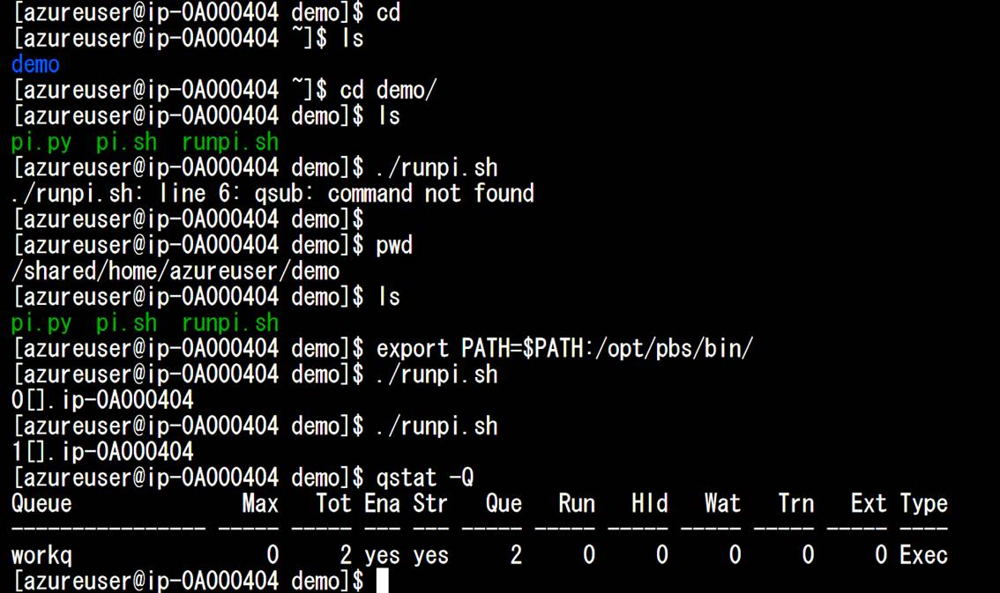

Azure CycleCloudハンズオンセミナー
Hiroshi Tanaka Microsoft Corp. hirost@microsoft.com
更新日 2019/3/3
Azure CycleCloud利用までの全ステップです。所要時間は1時間想定。細かい点も載せていますが、通常のアカウントを持っていれば、2ステップのみで15-30程度の時間で展開が終わります。
1. マイクロソフトアカウントの作成
2. サブスクリプションの追加
3. Azure CycleCloudの前提条件の確認
4. Azure CycleCloud展開のための準備
5. Azure CycleCloudの展開
6. Azure CycleCloudの初回セットアップと利用
7. クリーンナップ・仮想マシン停止
1. マイクロソフトアカウントの作成
Azureへのアクセスアカウントを持っている場合は1を飛ばしてください。
Outlook.comなどマイクロソフトアカウントの作成する。マイクロソフトアカウントとは、マイクロソフトのDBで登録されているemailアドレスであり、既存の他社のemailアドレスを登録することが可能です。
|
|
Create One!を選択 |
|
|
アカウント登録1 |
|
|
アカウント登録2 |
|
|
|
|
ブラウザで portal.azure.com へアクセス |
|
|
|
ログイン |
|
|
Azureログイン後のポータル画面 |
2. サブスクリプション追加 (クレジットカード登録と無償利用申し込み)
Azureポータル上のサブスクリプションを選択する
サブスクリプションの状態を確認する。現時点ではサブスクリプションを持っていません。追加をおしえてサブスクリプションの登録を実施します。
申し込むサブスクリプションのプランを選択します。ここでは無償版を選択します。
アカウントの個人情報を入力します。その後、クレジットカードなどの登録が必要です。
ペイメント登録、契約書などを確認してサインナップをします。

再度Azureポータルにアクセスし、サブスクリプション を選択して「状態」が「アクティブ」であることを確認する
3. Azure CycleCloud前提条件確認
3. 1 Azure AD 「アプリの登録」が可能か確認する
Azure AD > ユーザ設定 > 「アプリの登録」がはい(YES)であることを確認する

3. 2 サブスクリプションの確認
サブスクリプションの「自分の役割」が「アカウント管理者」であることを確認する。（所有者等でもかまいません）
4. Azure CycleCloud展開のための準備
これから作成する作業の構図・手順を示します。
4. 1 サービスプリンシパルの作成
サービスプリンシパルはAzureのリソース（コンピュート：仮想マシン、ネットワーク、ストレージなど）を自由に利用するための仕組みです。Azure ADにアプリケーションとして登録してAzure CycleCloudからリソースを自由に利用できるようにするための機能です。実際にはAzure CLIから1行コマンドを入力するだけです。
Azure CLIが利用できる人は次の4.1.1 バーチャルコンソールの準備についてはスキップしてください。
スクリーンショットの遷移
コンソール画面のプロンプトを確認
コンソール画面は、Azure上の仮想コンテナにアクセスしており、Cloud Shellと呼びます。 以下の図では、赤枠になります。ハンズオンや企業で利用しているPCだけだと環境に違いや制限があるため、今回はこのCloud Shellから操作します。
|
Tips Cloud Shellの画面は小さいです。Azureのタブを複製して、一つはAzure画面操作、もう一つをCloud Shellを最大化して利用すると作業しやすいです。
|
Azure 認証ログイン
|
az login |
ブラウザを開いてキーを入力して認証
複数のサブスクリプションがあるときには、他のサブスクリプション（他の環境）を誤って操作しないようにご注意ください。az account set –subscription コマンドで変更します。今回は新規のアカウントのため必要ないはずです。
コンソールからコマンドを入力する
|
az ad sp create-for-rbac --name CycleCloudApp --years 1 |
アウトプット
|
"appId": "xxxxxxxx-xxxx-xxxx-xxxx-xxxxxxxxxxxx", "displayName": "CycleCloudApp", "name": "http://CycleCloudApp", "password": "xxxxxxxx-xxxx-xxxx-xxxx-xxxxxxxxxxxx", "tenant": "xxxxxxxx-xxxx-xxxx-xxxx-xxxxxxxxxxxx" |
アウトプット例
パスワードは一度しか表示されません。すべて手元へコピー＆ペーストして保存してください。
4. 2 SSHキーペア―を作成します。自身で持っているSSHキーペアを持ち込むことも可能です。
|
ssh-keygen -f ~/.ssh/id_rsa -N "" -b 4096 |
公開鍵を表示します。
|
cat ~/.ssh/id_rsa.pub |
これもコピー＆ペーストして保存しておきます。
キーペアのうち秘密鍵は今後も利用します。今のうちのダウンロードしておきます。
5. Azure CycleCloudの展開
Azure CycleCloudをARMテンプレートから自動展開します。（もしくは短縮URL https://aka.ms/cchol を開く）
ARMテンプレートを開きます。
|
サブスクリプション |
Free Trialもしくは自身のもの |
|
リソースグループ |
任意名で新規作成。ここの例では、 CycleCloud01 |
|
場所 |
東日本 |
|
Tenant Id |
az ad spコマンドからのアウトプット |
|
Application Id |
az ad spコマンドからのアウトプット |
|
Application Secret |
az ad spコマンドからのアウトプット。パスワードのこと |
|
SSH Public Key |
SSH公開鍵。cat ~/.ssh/id_rsa.pubの結果をコピー＆ペースト |
|
Username |
Azure CycleCloudサーバの管理者ユーザネーム。ここではazureuser を推奨 |
|
CycleCloud Vm Size |
無償版のAzureはリージョンで4コアまでしか利用できません。D3_v2で作成すると他の仮想マシンが作成できないのでこのハンズオンセミナーでは、Standard_D1_v2へ変更する |
|
CycleCloud Version |
Latest そのまま |
|
Azure Sovereign Cloud |
Public そのまま |
|
Vnet Name |
Azurecyclecloud 変更の必要なし |
|
Storage Account Location |
作成するストレージアカウントの名称。注意が必要。今回は、<cchol><番号><名前> 3-24文字、小文字と数字のみ。他は一切使えない |
これまで取得をした情報を入力します。
購入ボタンを押下してAzure CycleCloud構成を作成します。
10-15minほどデプロイを待ちます。
デプロイ完了の確認
先ほど作成したリソースグループを選択します。
Cyclecloudを命名されている仮想マシンを選択します。
DNS名をコピーします。このFQDNが今後アクセス先のURLになります。
6. Azure CycleCloudの初回セットアップと利用
5で取得したFQDNにブラウザでアクセスします。自己証明書でのアクセスなので、以下のエラーが出ますが、詳細設定からアクセスします。
※実際のプロダクション展開では、証明書を自身で用意します。
サイト名の決定。そのまま

許諾内容を確認。チェックしてNEXT
User ID、Nameともに先ほどARMテンプレート作成時にいれたUser Nameを入力する（azureuser）パスワードを作成して入力する。
以下のクラスタ作成の画面が開けばAzure CycleCloudの利用開始です。ここまでお疲れ様でした。

6. 2 利用について
MD系のアプリケーションLAMMPSをテストします。テンプレートからLAMMPSを選択してください。任意のクラスタの名称を入力
クラスタにはMasterとExecuteがあります。どちらも現在の無償サブスクリプションの制限から4vCPUまでの利用に制限されているので、以下の通りD1（1コア）に仮想マシンサイズを下げます。
まずクラスタを起動します。

クラスタすべて作成するので、5-10minほど待ちます。グリーンになりアクセスできるようになったら手元のSSHと秘密鍵でアクセスします。
アクセス先は、上記画面の「コネクト」から取得
1. 手元のSSHクライアントとダウンロードした秘密鍵でアクセス
2. Azureのバーチャルコンソールからアクセス
本ハンズオンでは、#2を想定
|
ls -la |
ディレクトリ確認 |
|
cd demo |
デモ用のディレクトリ確認 |
|
qstat -Q |
現在のジョブ実行状況を確認 |
|
sudo chmod +x ./*.sh |
ジョブ実行のための権限追加 |
|
./runpi.sh |
ジョブ実行 |
|
qstat -Q |
現在のジョブ実行状況を確認。Queueに新しいジョブが投入済み |
実際のアウトプット例（exportコマンドは画面がグリーンなっていれば、自動設定され必要ありません。）

PIを計算するジョブをPBSになげました。しばらくするとExecute用の仮想マシンが自動生成されジョブが実行されます。
最後に構成を確認してみましょう。
Master（ノード）とは・・・Azure CycleCloudから展開するクラスタの管理ノード、これはジョブスケジューラと踏み台サーバ（ステップサーバ・ジャンプサーバ）も兼ねており、ユーザ・チームによって環境が与えられる
Execute（ノード）とは・・・計算ノードのことでMPIジョブなどがこのノードで実行される。Azure CycleCloudから自動生成され、ジョブ登録され、自動で停止される。SLAがない割引価格の低優先度マシンが利用できる。設定値の利用コア数まで自動的にスケーリングする。
7. クリーンナップ・仮想マシン停止
リソースの削除、もしくは仮想マシンの停止を忘れないようにしましょう。
1. 利用したクラスタの仮想マシンの停止
Terminate: 仮想マシンの削除。次回同じ設定で再構成になる
Stop: 仮想マシンの停止。
2. Cyclecloudサーバ仮想マシンの停止
※ 必要がなければリリース削除はわすれないこと。無償期間後には料金がかかります。
Appendix
1. クォータについて
無償トライアル版のサブスクリプションはリージョン当たり4 vCPUまでの利用になります。もう少し本格的に利用する場合、クォータ（利用上限数）の引き上げを依頼してください。特にHPCの場合、H16rでのMPI（Intel MPI、Platform MPI）利用、今後HB（EDR、AMD EPYC）、HC（All MPI、EDR、Skylake）仮想マシンの利用が可能です。この場合にも、下図のクォータの「引き上げを依頼」してください。
Resource Manager の vCPU クォータを増やす要求
https://docs.microsoft.com/ja-jp/azure/azure-supportability/resource-manager-core-quotas-request
2. Azure CycleCloudのテンプレートについて
Github上のAzureレポジトリ配下にcyclecloud-xxxx といったテンプレートがあります。これをダウンロードして利用することができます。
3. NEXTステップ
AzureCycloeCloudテンプレートについて自身で利用・カスタマイズできるようになることが活用のポイントです。AzureCycloeCloudのポイントは自身で簡単にHPC/CAEアプリケーションのテンプレートを作成するフレームワークを利用できることです。次のチュートリアルを実施してみましょう。
Azure CycleCloud Tutorial: Modify a Cluster Template to Add Persistent Storage
https://docs.microsoft.com/en-us/azure/cyclecloud/tutorials/modify-cluster-template
Azure CycleCloud Tutorial: Deploy a New Application to an HPC Cluster
https://docs.microsoft.com/en-us/azure/cyclecloud/tutorials/deploy-custom-application
テンプレートの利用にはAzure CycleCloudコマンドラインツールが必要です。画面の「？」からツールをダウンロードして利用します。
詳しくは、チュートリアルを参照してください。
4. 参考資料
総合ドキュメント：https://docs.microsoft.com/en-us/azure/cyclecloud/
PDF：https://docs.microsoft.com/en-us/azure/cyclecloud/opbuildpdf/toc.pdf?branch=live
Resource Manager の vCPU クォータを増やす要求：
https://docs.microsoft.com/ja-jp/azure/azure-supportability/resource-manager-core-quotas-request
AzureCycloeCloudテンプレート： https://github.com/Azure?utf8=%E2%9C%93&q=cyclecloud-&type=&language=
ご質問は、マイクロソフト田中 ( hirost@microsoft.com ) まで